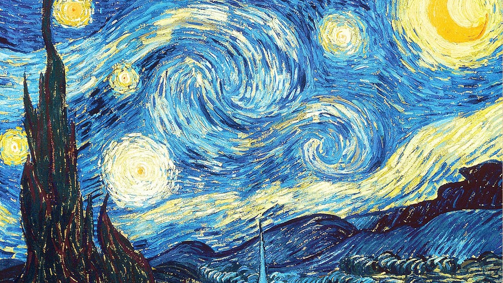
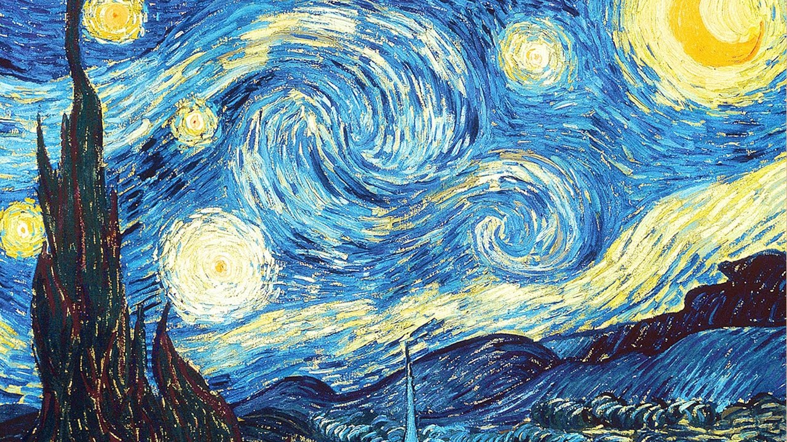
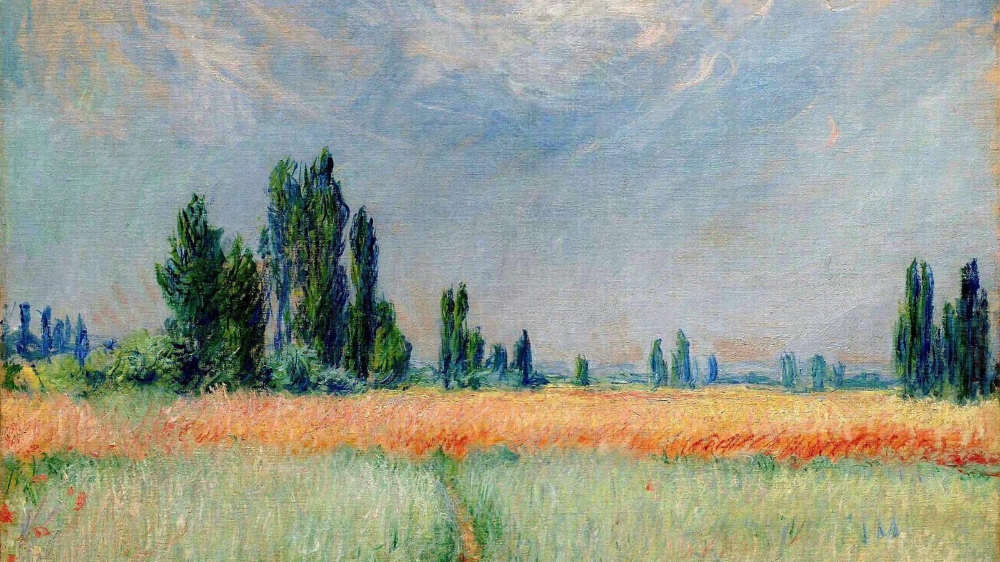
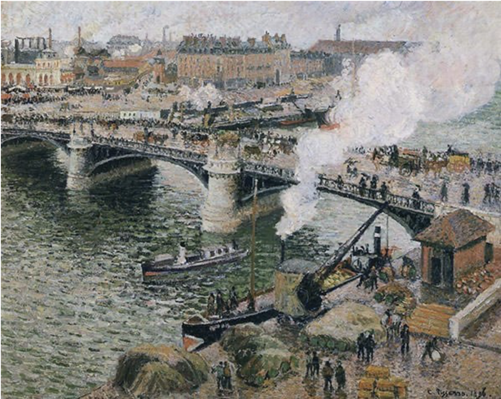
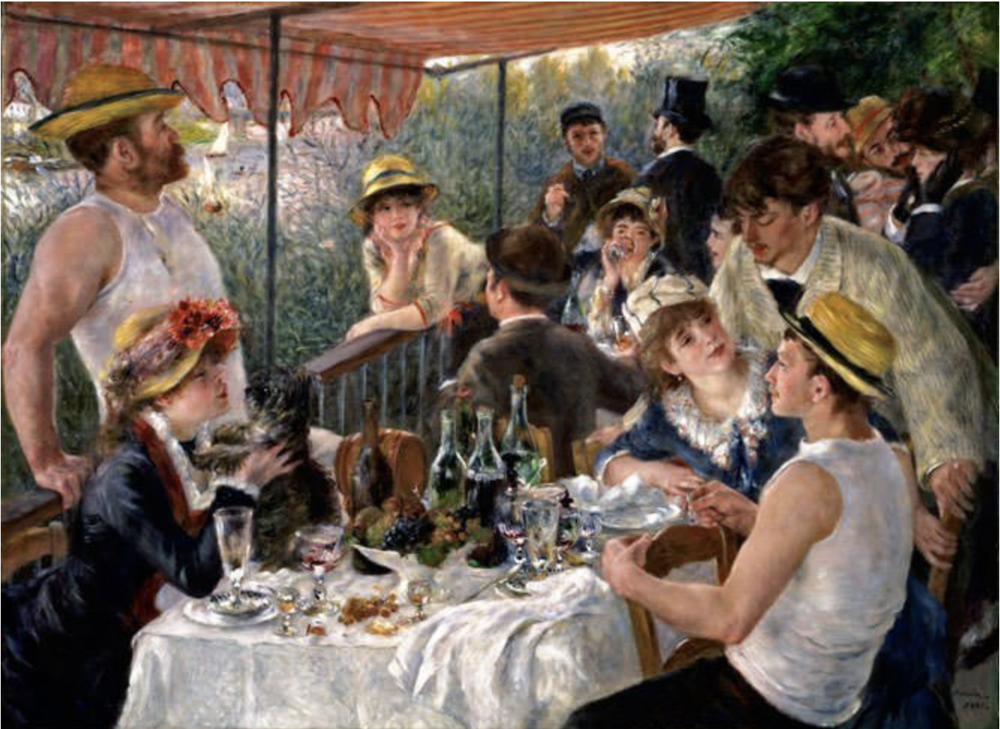
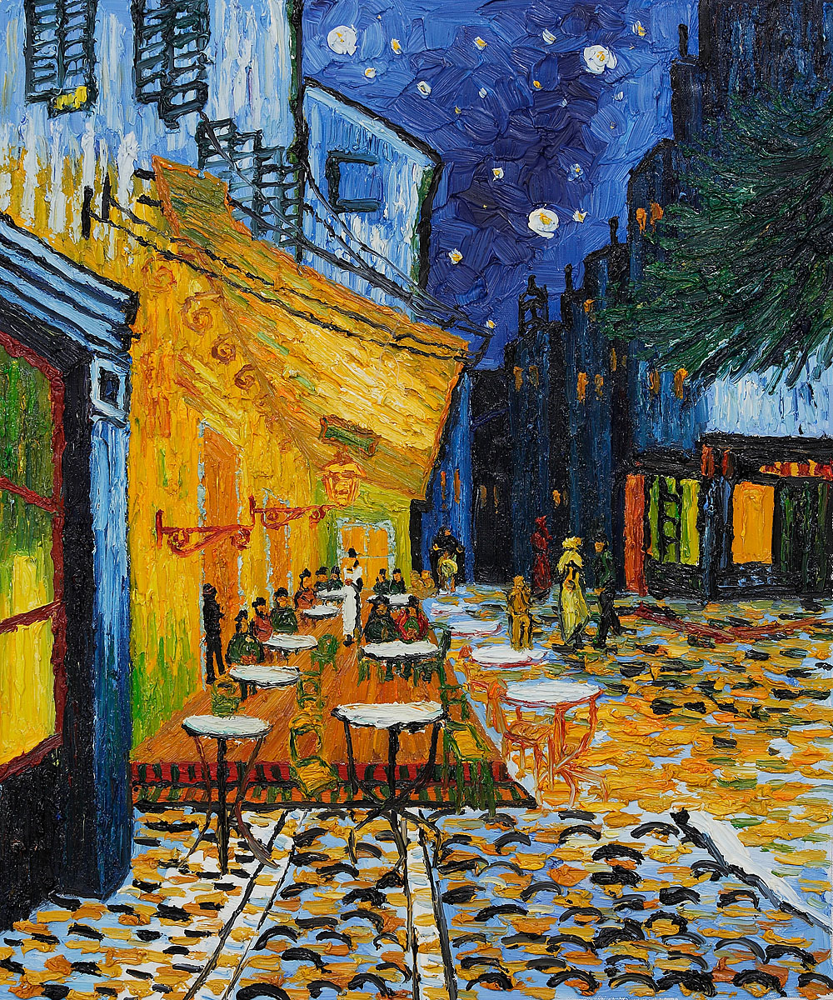
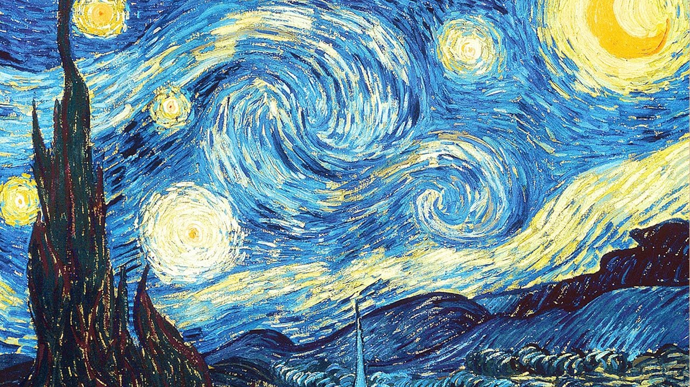

  
Most people refer to Vincent Van Gogh's art as post impressionism, but he had never even heard the phrase. The term post impressionism was coined by an art critic named Roger Fry in 1910. He described the art from the last two decades of the 19th century as post impressionism. Some famous artists that fall under this term are Paul Cezanne, Paul Gauguin, Henri de Toulouse-Lautrec, Georges Seurat, and Vincent Van Gogh. Rather than a specific style, post impressionism refers to a unique take on classic impressionism. Classic impressionism depicted nature as light and color and had a stronger focus on the actual physical object they were painting. The post impressionists,"rebel impressionists," would paint to express the meaning felt beyond the appearance. Following post impressionism came cubism and fauvism.

